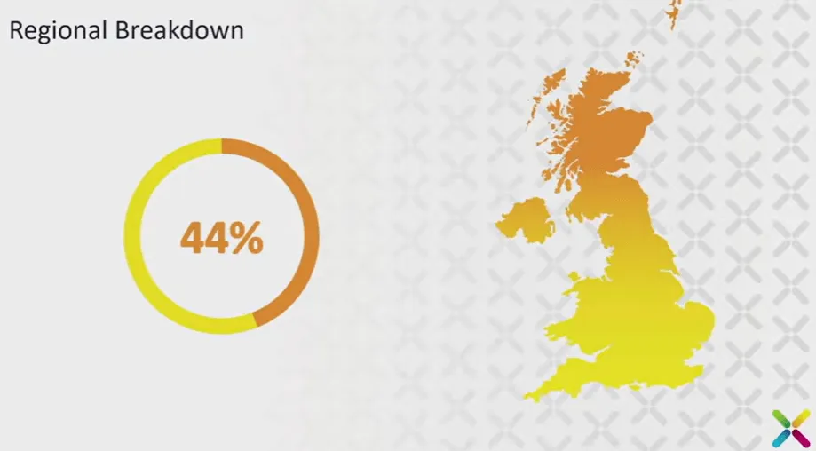
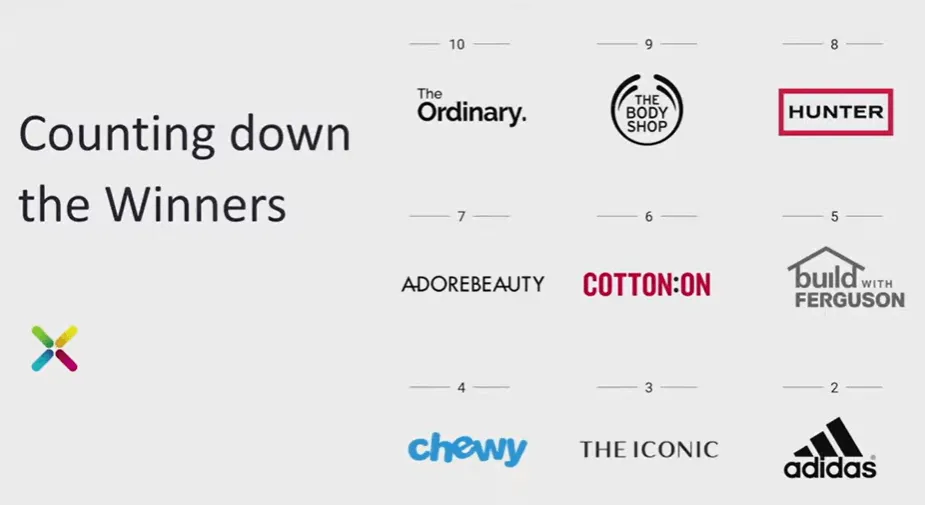
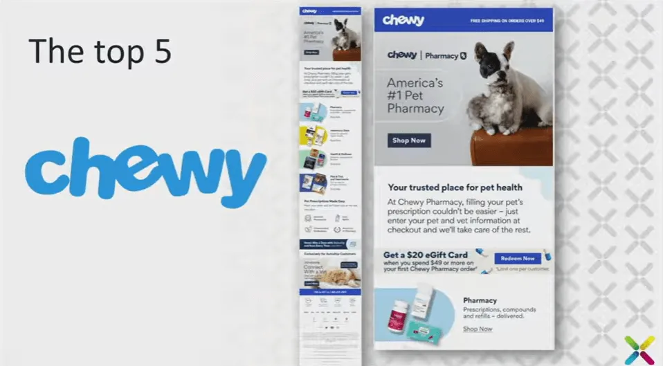
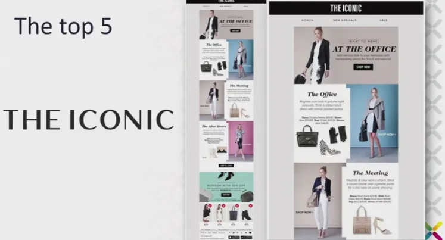
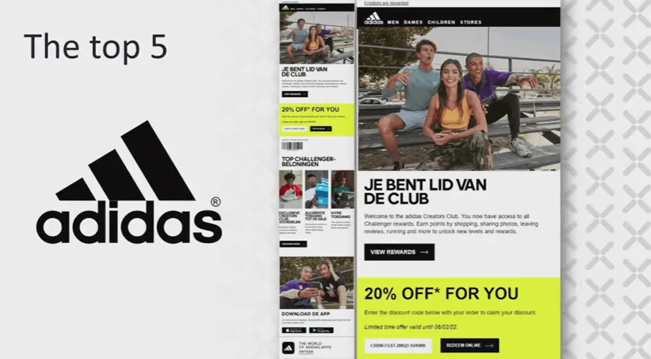
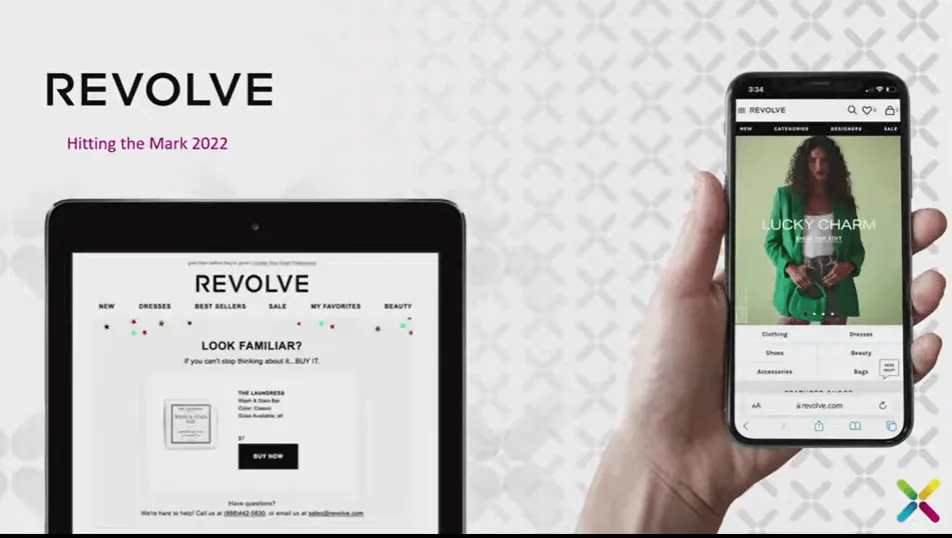
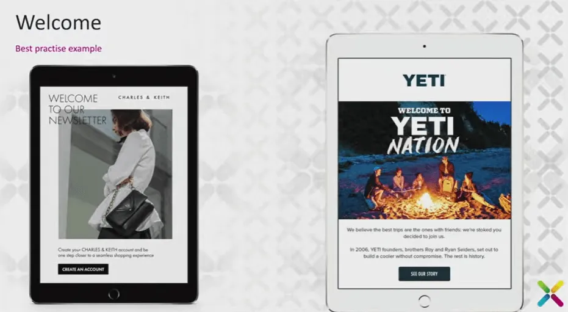
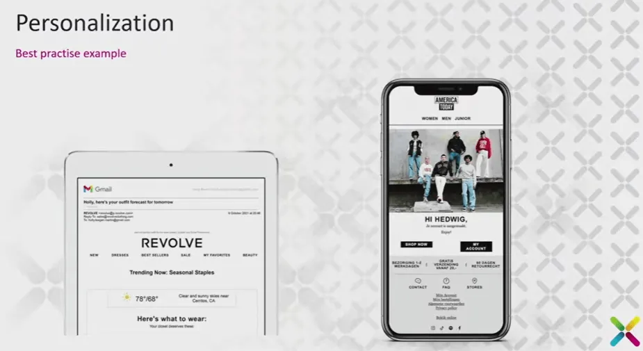
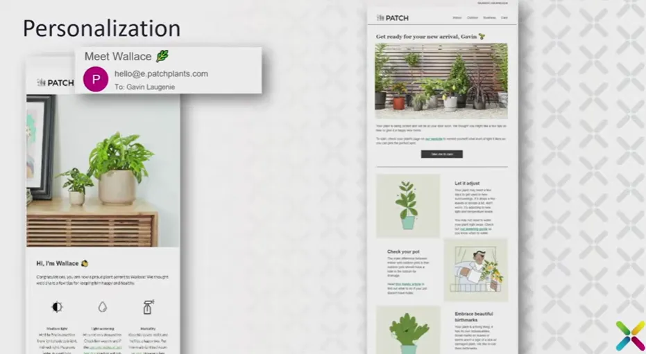
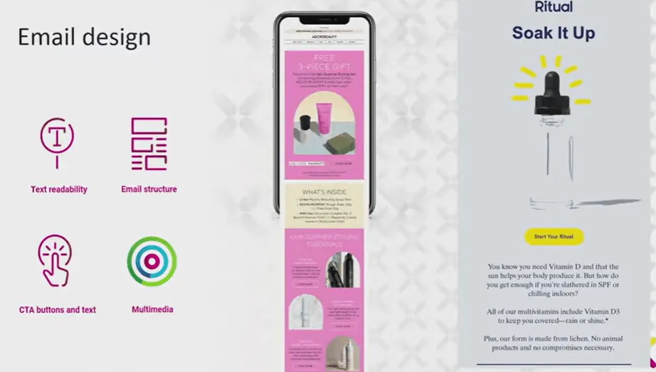

At the Email Geeks session led by Gavin Laugenie, Global Head of Content at dotdigital, the focus was clear: what separates average email programs from truly exceptional customer experiences? In this lively and interactive talk, Gavin breaks down years of insights from Hitting the Mark, showing how brands can connect data, creativity, and empathy to deliver better results. From acquisition to personalization, post-purchase flows, and cross-channel consistency, this session dives deep into what it takes to make email not just work — but stand out.
TL;DR
- Email is hard — there are no silver bullets, only testing and iteration.
- Smart welcomes, useful personalization, and readable design beat quick discounts.
- Post-purchase and cross-channel flows turn transactions into relationships.
- Learn from top brands like Revolve, Chewy, and The Iconic, then make it your own.
Gavin Laugenie: So, I think we should all send more emails. Emails seem to work for us, so we should probably send more. Sending more emails seems to work, so yeah, that’s about it. I know you were probably expecting more from me today, but I think that’s enough, right?
Yeah, I nailed it. Thank you, and I’ll catch you later. No, no, no — that was lackluster, right? The whole point of that is when you have a lackluster experience, it just doesn’t fill you with joy. You’ve got to have a lot more energy in there. So, let’s start again. How are you guys doing? You good? Woo! That was pretty good, actually. Usually when I do that, people just say, “More energy!” Definitely more energy, so that’s good.
The primary objective is to gain a deeper understanding of driving better — or exceptional — customer experiences. That’s something I love. What we’re going to do today is talk through Hitting the Mark, and I’ll explain that a bit more in a minute. I’m Gavin Laugenie, Global Head of Content at dotdigital. I’m a bit of — actually, very much — an email geek, a tech geek, and I’m obsessed with customer experience. Once you start focusing on that, marketing becomes more fun — and that’s how it should be. Marketing should be fun, right? Yeah, it should.
But first, I'd like to tell you a little about dotdigital. Does anyone know Dotdigital? We’re a customer engagement platform for marketers and developers, helping you send the right message to the right person at the right time across the customer journey. We help customers manage data, extract insights, and grow over time. The platform is simple to use, powerful, and connects with our partner network to drive exceptional customer experiences. That’s exactly why I wanted to go through this session — to focus on understanding people better. If we truly understand the people we send messages to, everything gets easier, and that’s what it should be about: creating easier, more meaningful experiences.
What’s your name? “Mitch”. Hi, Mitch, I’m Gavin. Nice to meet you. What do you do? “I’m the Email Marketing Manager for Quartz.” So, you’re an email person. Good! Having fun so far? “Amazing time.”
Good! See what we’re doing here? Building relationships. In real life, that’s natural — so why don’t we do that in email? We struggle with it, but we need to make those kinds of connections. That’s what we should focus on: building relationships. See, if I forgot Mitch’s name, I’d be a bad person. We do that in email sometimes, too. But I didn’t — because in real life, I’m a good person. Not really, but you get the point. I want to take a step back for a moment. I was recently discussing thought leaders — individuals who take the stage to speak — and whether we should listen to them. What makes them qualified? And it got me thinking: when something is accessible, people often assume it’s easy to use.
That made me think about football. I’m a massive football fan. When I was a kid, to play football, I needed a ball (obviously) and at least two jumpers. That’s all you need to play. It’s simple and accessible. I understand the rules: kick the ball into the net, score more than the other team, and you win. But I’m terrible at football — really bad. You know who’s pretty good, though? Cristiano Ronaldo. And although I’m bad at the sport and he’s incredible, we both started at the same level. We both probably began with a football and jumpers for goalposts. The difference is that he studied the game, practiced every day, and put his all into it until he reached the top and started winning awards. It made me realize that football is a lot like email. Hear me out — it’s accessible. Anyone can get a cheap email tool, and everyone has an opinion about email. I’m sure your boss has an opinion on the emails you send and thinks they could do better. However, not everyone can handle email effectively. Why? Because it’s hard. Email is hard.
That’s why I want to talk about Hitting the Mark — a project we’ve been running for years. Like Ronaldo, you can get better by studying examples and learning what works. This year is our first fully digital version of the Hitting the Mark report. Essentially, it encompasses the entire e-commerce cycle, from signing up on a website to making a purchase. We’ve analyzed how brands handle this experience and how it’s evolved over time. There’s been more email sent than ever, more competition in the inbox, and we wanted to reflect that in our scoring. We used a solid methodology: evaluating 100 brands across 10 countries in four regions — the US, APAC, EMEA, and the UK (which has its own category). We assessed three main areas:
- Email experience
- Customer experience
- Cross-channel experience
And within that, we had even more detail. I’m going to take a deep breath because there are a lot of areas we covered here. We examined chat and messaging, customer acquisition, preference centers, welcome sequences, personalization, abandoned cart recovery, storytelling, UX and web experience, post-purchase experience, retention, and sustainability—all to help you understand what you need to do to deliver exceptional customer experiences.
Okay, so there was a lot in here. As I said, we’ve been doing this for a long time, and we break this down into regions. If you download the report, you can see what’s happening in each of these regions. Since we’re in the UK, we’ll look at how the UK performed. And this is the thing I think about all the time. I say email’s fucking hard—and it is fucking hard. People often ask if there are any silver bullets. There are none. What you have to do is test things constantly and see what works for you. We often discuss best practices, and people will get up here to share their insights. But to me, best practice is only best practice if it works for you. And the only way to figure that out is by testing.Looking at this regional breakdown, the average score in the UK was 44%. We’re clearly lacking something somewhere. Upon examining the breakdown, we can see that the email experience scored only 46%, with customer experience being relatively good, but the cross-channel experience falling behind. I’ll explain that in a moment. Some brands are doing better than others (The Body Shop, Hunter, and The Ordinary). All three of these brands scored 59% in this report. But again, there’s still room for improvement—they can still do better. We need to find out how.
Another reason why the scores are down this year is that I’m a bit of a bastard. I reviewed the points we awarded in previous years and realized that some brands were receiving points simply for fulfilling the basics. So instead, I started taking points away for not doing the better, more advanced work. That’s why the overall aggregate score dropped. But let’s look into the top 10. This isn’t the reason we do this, but it’s quite fun to see how people rank. There are no losers here. Well, there are some losers. But we have a top 10—or in this case, a top nine. You’ll recognize a few of these brands. So, some brands you recognize and some you don’t. However, I thought we could explore what some of these brands are doing. Ferguson, ranked number five, did some good things and some not-so-good things. What they did well was understand their audience. They send out a digest on Sundays, focused on home improvement—organizing kitchens, bathrooms, that sort of thing. They found that Sunday is a good time to reach people working on their homes. It’s all about organization. If you look at their CTAs, they aren’t “Buy now,” because this is a useful email. The CTAs say “Read more.” It’s an actual digest. Let’s be honest: once you click through, you can make a purchase. But it creates an environment where the email feels useful rather than pushy or salesy.
Ferguson, ranked number five, did some good things and some not-so-good things. What they did well was understand their audience. They send out a digest on Sundays, focused on home improvement—organizing kitchens, bathrooms, that sort of thing. They found that Sunday is a good time to reach people working on their homes. It’s all about organization. If you look at their CTAs, they aren’t “Buy now,” because this is a useful email. The CTAs say “Read more.” It’s an actual digest. Let’s be honest: once you click through, you can make a purchase. But it creates an environment where the email feels useful rather than pushy or salesy.
Of course, they’re not stupid—they still need to make money. So they also send out promotional campaigns. One thing you need to know about me, Mitch, since we’re going to be best friends now, is that I love a GIF in a campaign. Love a GIF. So having one here is great. “Jot that down,” he said. “Got it.” Perfect. Chewy placed number four. They excelled in a few areas, but also made some mistakes. When this email lands with images off, you see almost nothing because it’s entirely image-based. That’s not necessarily terrible—most people have images on—but imagine if you’re visually impaired. There’s no alt text either, so it falls short. There’s useful content in there, but near the bottom, there were two issues. The first is the unsubscribe link. I always say, don’t hide it at the bottom. Move it to the top. If someone’s going to unsubscribe, they’ll do it anyway. Hiding it is like knowing you’re about to get dumped and ignoring all their calls and texts—it’s going to happen. Let it happen. At the very least, take them to a preference center where they can manage their choices. The second issue: the “View in browser” link was at the bottom. But if your images are off, you won’t even see it. So that placement didn’t make much sense. Still, they did some good things, too.
They attempted to gain a deeper understanding of their customers. It worked on me—I have a dog named Gus, a miniature schnauzer who kind of looks like their mascot. You can fill in details about your pet, and they will tailor the content to your needs. That’s brilliant: getting to know people and sending relevant content. The Iconic did very well too—clean, minimalistic design. What I liked most was how well it worked on mobile. I shouldn’t even have to say it, but in 2025, many companies still send emails that don’t display correctly on mobile. Think mobile first. Also, if you have an app, promote it. The Iconic did that, plus they had live chat and a bot for offline support. Adidas in the Netherlands also performed very well. The copy was in Dutch, but the design was consistent across the board, with great customer service and well-structured emails. They had GIFs, strong content, and effective app promotion.But there can only be one winner: Revolve. They performed exceptionally well overall, especially in customer service. What they did best was understand their audience. Just as we’ve been saying, they built relationships and gathered data to send the right message to the right person at the right time. It sounds cliché, but it’s true—that’s how you deliver exceptional customer experiences. They collected a large amount of behavioral data and sent a variety of campaigns, including effective abandoned cart messages. You wouldn’t believe how many businesses forget to include the item left behind in the cart. Revolve did that right. They effectively utilized personalization, even in subject lines. I’m not saying that’s the ultimate personalization tactic, but they tried it—and it worked. They also had a progressive web app, one of only five brands to do so. They pushed the bar higher than most competitors. Their overall scores are 75% for email experience and 71% for customer experience. Cross-channel is still an area many brands struggle with, but Revolve set a strong example. Overall, 68%. Even as the winner, there’s still room to improve—just as there is for everyone.
So what should we look at? One of the key reasons we do Hitting the Mark is to extract clear takeaways. We will cover three key areas: the cross-channel experience, the customer experience, and, first, the email experience.
One of the first things we noticed about the email experience is that you need an email address to get started. It is becoming increasingly difficult and expensive to acquire one, so ensure the sign-up form is placed strategically. Place real estate at the top and bottom of the page, and consider using a pop-up as well. Make sign-up easy and accessible, and collect the details you actually want. Many brands offer discounts for sign-ups, but it shouldn't always be about the discount. Often, when I work with clients, they train their audience to buy only when something is on sale.
Williams Sonoma took a smarter path. They did not offer a discount. They offered special recipes because they knew what their customers bought. When purchasing a nice pot or pan, a great recipe is the perfect companion. They matched a relevant offer to their audience and provided useful content, not just sales pressure. Once you have the address, focus on the welcome emails. A welcome series is massively important and often overlooked. Use it to make a strong first impression, learn about your audience, and collect information. Welcome emails tend to perform better than later messages, because they are the first step in the relationship. Make sure they are personalized, use offers that add value, and include clear CTAs. Tell people what to do next. The email looks great, but what is the next action?Two quick examples about “what to do next.” Charles & Keith connected the email sign-up with account creation. Too often, there is no connection between creating an account and subscribing to email. If there is no connection, that's fine, but at least ensure the account creation email is on brand. Too many look like they fell off the back of a van. Charles & Keith’s message was branded and guided people to complete that step. YETI immediately welcomed subscribers to “YETI Nation,” creating a sense of belonging. One of the first actions they encouraged was not to say, “Go buy now,” but rather, “read our story.” Explain why you are different. We all have something unique to say, and many people will buy from you because they connect with your story.
Personalization is important. 27% of brands used name-based personalization in subject lines. You do not have to do that, but 27% tried it, and that is the point. Test and see if it works for you. Best practice is only best practice if it works for you. For one brand, we tested emojis and saw an adverse reaction from their audience. Test, then decide.Two examples. Revolve utilized name personalization in the subject line and also incorporated subtle geo-based personalization within the email, such as tomorrow’s local forecast with a styled outfit guide. It did not rely only on a first name. America Today used basic first-name insertion. That reminded me of Patch Plants, a brand not in the report but one I buy from. I purchased a cheese plant named Wallace. Their emails included Wallace’s name in the subject line and provided a long, useful message about caring for that specific plant. Tips on watering, light, spotting problems like brown leaves, who to contact for help, and a feedback module to rate the experience. Before delivery, they sent another email with rich GIFs and a supported email with SMS to notify me that Wallace was on the way. Useful content, not just selling. On abandoned carts. They are a staple in e-commerce, but the key is not to pester people. If I am shopping while my child plays on the floor and something happens, I will close my laptop. That is not an invitation for a discount. First, try to understand why the cart was abandoned. Add value in the follow-ups.
Revolve did this well by showing the actual item left in the cart. Many brands forget to include it. They also indicated how many people were viewing the item and whether the stock was low. That can feel pushy, but it is useful information when an item is likely to sell out. Skullcandy took a different approach by sending an SMS after cart abandonment. I am not sure about that, but in some cases, it can work, especially if the message is genuinely useful, such as a low-stock alert. Use different tactics, test them, and remember that it is only best practice if it works for you.
Getting the email experience right is essential because we’re all email geeks, right? One of the biggest factors in email performance is design. If someone opens your email and it looks great—clean, well-structured, with strong visual appeal—they’ll remember it. They’ll come back to it again and again and recognize your style over someone else’s. And of course, I had to include GIFs here. About 48% of brands use GIFs or dynamic images. When it comes to email design, think about text readability, layout, CTAs, and multimedia. This example from Adore Beauty is nicely designed—featuring great colors and strong imagery. You did a presentation recently, Mike, about arches, right? Yes, arches are good. Ritual also incorporates a significant number of GIFs into its campaigns. People say a picture is worth a thousand words; a GIF must be worth a lot more. I love them. Don’t be a one-trick pony, though—mix it up. GIFs can also be educational, showing users how to use a product or feature, which makes them useful beyond their aesthetic appeal.
Moving from an email experience to a customer experience, we examined what happens when someone clicks through to your website. The goal is to make it easier for them to convert. The first thing we looked at was UX and website experience—how to lower barriers to purchase and make things smoother for users. Most people browse and make purchases on their phones, so utilize the available tools to your advantage. 81% of brands enable voice search, which is great. If your audience is already on mobile, make the most of it.
IKEA had a brilliant approach. One of the most frustrating things for a retailer to hear is a customer saying, “I’ll know it when I see it.” Instead of leaving that to chance, IKEA allowed users to upload a picture of what they wanted, and their system found matching products. That flipped the in-store experience into an online one—clever and helpful. Next is post-purchase. Not having a post-purchase experience is like taking someone’s money, turning around, and walking away, saying, “Thanks, I’ve got your cash.” You need to follow up. Understand whether you did a good job. If you did, keep it up. If not, fix it—and let customers know that you’re making an improvement. These examples are simple: include the product they bought, ask for feedback, and show that you’re listening. It’s not just about collecting surveys; it’s about closing the loop and demonstrating your care for their experience.
Now for cross-channel. As I said, we’re email geeks, but email thrives when supported by other channels. Think about how we communicate daily. A friend sends something funny on Instagram, and we reply there; then we continue the conversation on WhatsApp or via text. We naturally move between channels. That’s how brands should think, too—keep the conversation flowing. It’s not about sending the same message everywhere at once. It’s about choosing the right channel for the right moment in the customer journey.
We examined SMS usage, which was commonly used for delivery updates and post-purchase notifications. Many brands also used it as an incentive channel. Skullcandy offered 15% off for SMS sign-up; Pura Vida gave 20%. Pura Vida also did something very smart: they clearly explained how they would use SMS. That’s essential. SMS is powerful but intrusive. The open rate is around 98%, which means people will read your message almost immediately. But that also means you can annoy them very quickly if you overstep. Be clear, be transparent, and refrain from abusing the channel. Then there’s live chat. Most brands offered it, but not all handled it well. Some didn’t have automated responses, which defeats the point of “live” chat. If you can’t be live, just call it chat. Others, like Harry’s and The Iconic, did it right. If no one is online, consider using automated responses, preloaded FAQs, or redirect people to another live channel, such as Facebook Messenger.
Live chat is especially valuable now that fewer people shop in-store. Customers still want help choosing sizes, fit, or style. Live chat bridges that gap. However, ensure that you integrate it properly with your email and SMS so that communication feels cohesive. To wrap this up, there are no silver bullets. Best practice is only best practice if it works for you. But at the very least, get the basics right—build a strong welcome program, understand your audience, and use the data you collect. The worst thing you can do is collect data and never use it—or use it poorly. Let other channels complement email. Email is king, but it needs support.
Think about experience. It’s not just about selling—give something back. Be useful to your audience. Take time to stand out. And remember, when it gets hard—and it will—email is fucking hard. However, if you examine competitor examples, reports like "Hitting the Mark," and continue testing, you can achieve the Ronaldo level of email marketing.
Thank you very much.